Coverage: local projects and identified public datasets. Private Drive and Colab remain unchecked because Chrome control failed. GitHub repositories are private. Thesis and the excluded projects were left out.
PROJECT 1 · Test ROC-AUC 0.836
When 96% accuracy is not enough
Most records describe satisfied customers. A classifier could predict the majority class every time and look impressive on accuracy while missing nearly every dissatisfied customer. The useful question is whether the model can rank the rarer cases above the rest.
The experiment starts with regularized logistic regression, tests whether PCA helps, then compares boosting. Duplicate predictor rows are kept together across splits so memorized copies cannot inflate test performance.
Results, limits and figures
The target is rare: a majority-only classifier already achieves about 96% accuracy. Report ROC-AUC and average precision, not accuracy as evidence of strong detection. At the default 0.5 threshold, minority recall remains very low; operational threshold/cost calibration is future work. The historical cross-validation score is not directly comparable to this new test split.
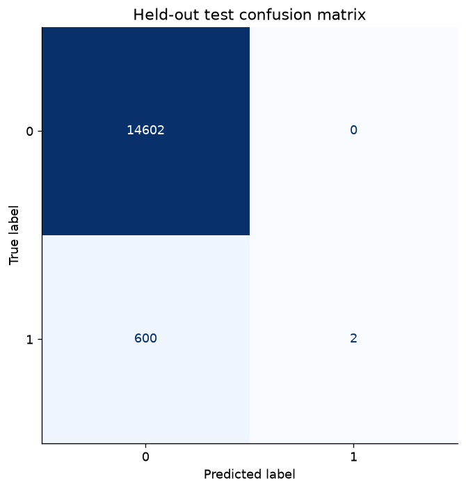
Test confusion matrix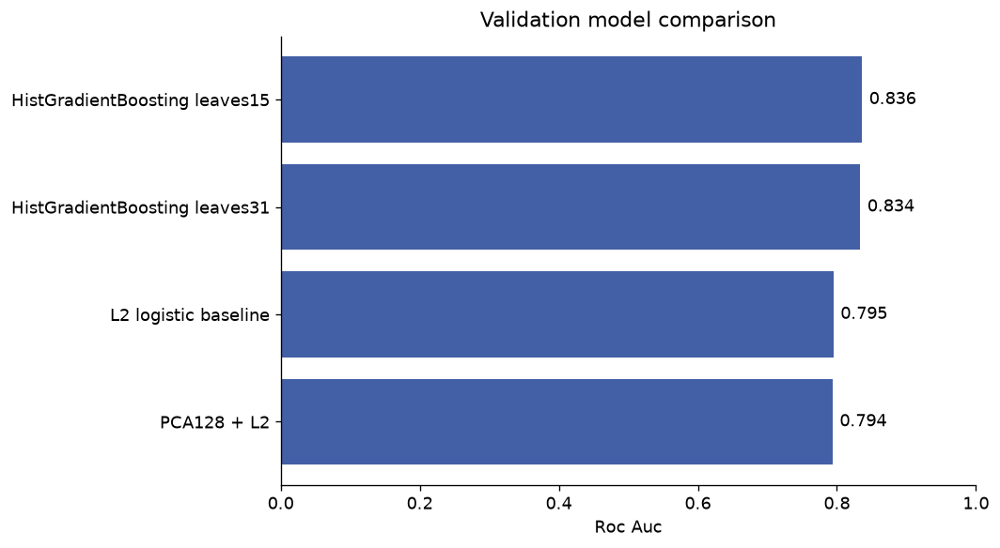
Validation comparisonRead the project story → · Notebook
PROJECT 3 · Test accuracy 70.85%
Finding sentiment in Arabic spelling variation
A short Arabic post may mix spelling variants, negation, emoji and informal language. A small word vocabulary can miss useful clues. The question is whether combining word meaning with character patterns improves a reproducible sentiment baseline.
Normalization keeps negation and emoji; duplicate and conflicting texts are checked before splitting. Five models compete on validation macro F1, with the test set reserved for the final comparison.
Results, limits and figures
This is an internal benchmark on the supplied dataset; its label provenance is unverified. A random split is not proof of generalization to new authors, time periods, domains or dialects. The earlier notebook score used a different split and should not be treated as a controlled comparison.
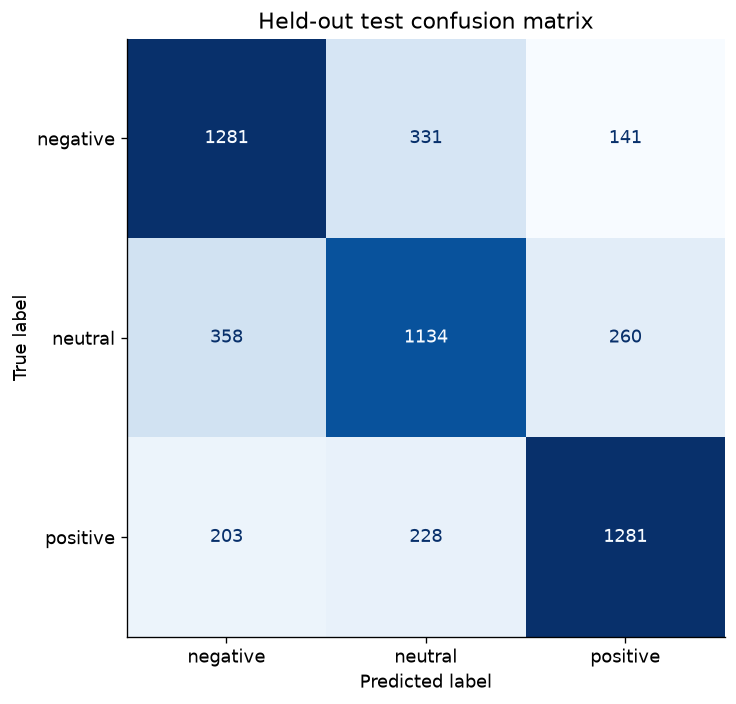
Test confusion matrix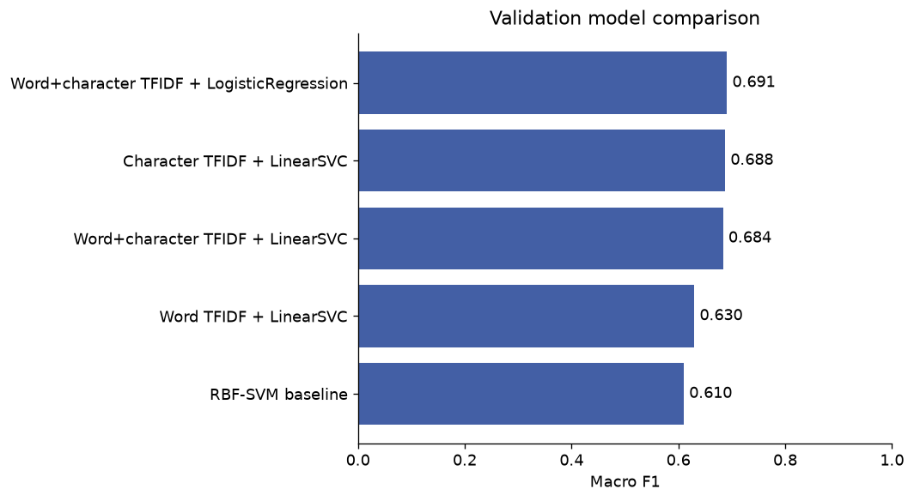
Validation comparisonRead the project story → · Notebook
PROJECT 7 · 931 products audited
What a cosmetics catalog can—and cannot—tell us
A cosmetics catalog looks like a natural place to compare brands, prices and ratings. But a chart is only as credible as the records behind it. This project begins by asking which comparisons the available fields actually support.
The revised workflow audits coverage, preserves missing values and separates currencies before summarizing products. Brand and product-type charts describe catalog coverage, while the missingness chart explains the limits of price and rating analysis.
Results, limits and figures
This catalog contains 931 products. Ratings are missing for 63.48% and currency for 60.47%; all 340 rated rows lack a currency. None of the rows with known currency has a rating, so a currency-controlled price–rating correlation cannot be estimated. Zero prices may represent unavailable prices. The privately saved Colab/Kaggle final version has not been inspected.
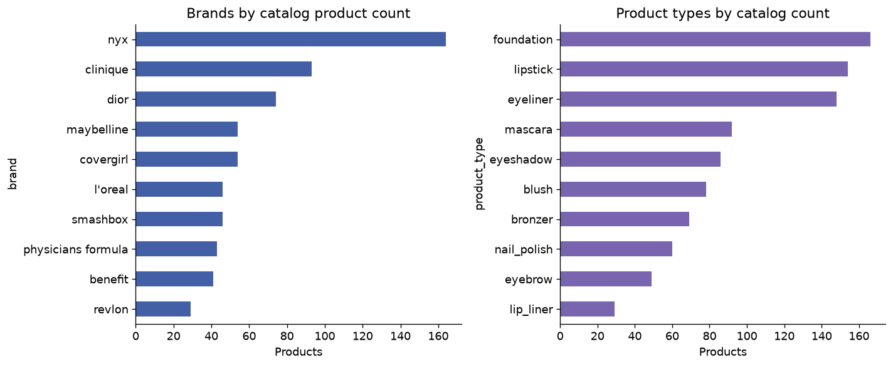
Catalog composition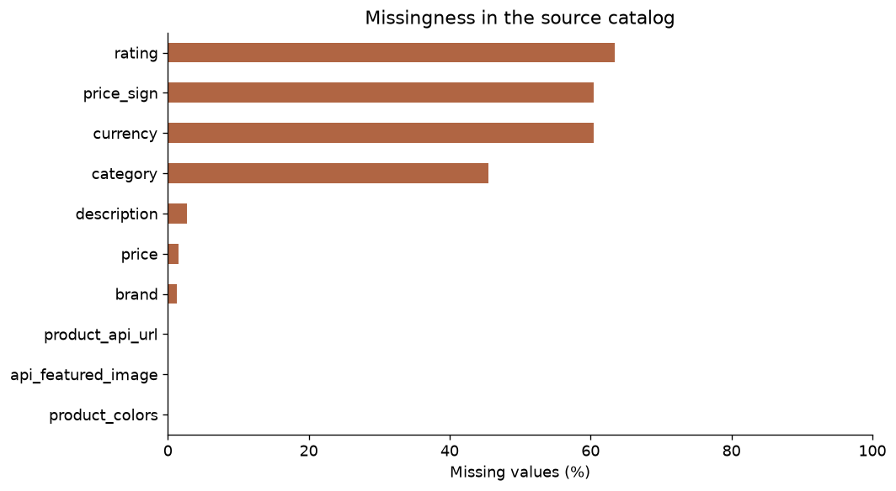
MissingnessRead the project story → · Notebook
PROJECT 8 · 2,412 reported events
Telling the layoffs story without inventing missing events
A layoff chart can look precise even when many reports omit the number of people affected. This project asks how reported layoffs vary over time and across industries while keeping the gaps visible.
The revised pipeline validates dates and counts, aggregates observed records and reports how many events contain a known count. It does not fill unknown layoff sizes with a median or pretend they are zero.
Results, limits and figures
The snapshot has 2,412 records from March 2020 to December 2025 and 372 missing layoff counts. Its observed total of 746,809 represents reported counts within this file, not a complete estimate of worldwide layoffs. Temporal and industry differences can reflect reporting coverage; they do not establish causes.
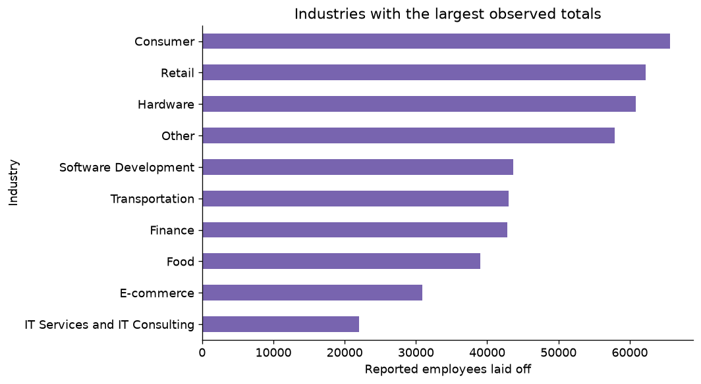
Industry layoffs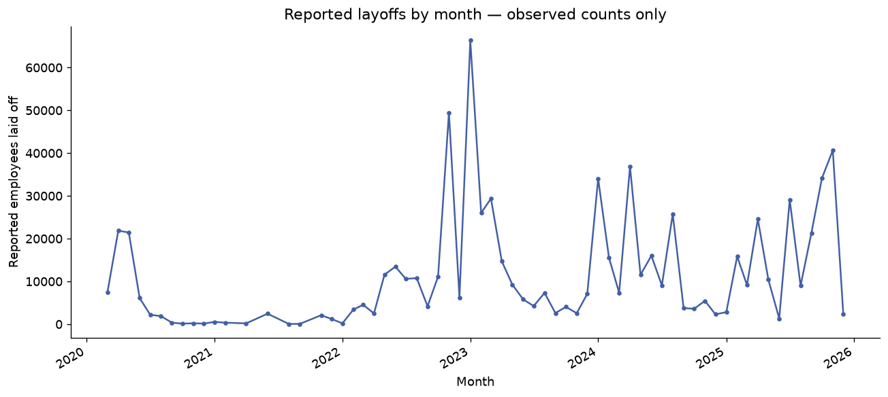
Monthly layoffsRead the project story → · Notebook
PROJECT 9 · Test accuracy 93.14%
From recognizing simple shapes to separating similar clothes
A pullover, coat and shirt can look similar in a 28×28 grayscale image. This project asks whether a regularized convolutional model can learn more useful visual features than a simple dense-network baseline.
A fixed validation split selects checkpoints. Batch normalization, dropout, AdamW and a learning-rate schedule are added to the CNN, and training statistics are learned without using the official test set.
Results, limits and figures
This is a small-image benchmark, not a validated classifier for real-world product photographs. MLP and CNN have different predefined training budgets. Tutorial notebooks were reference material; this refactor is a new reproducible experiment and does not claim a novel architecture.
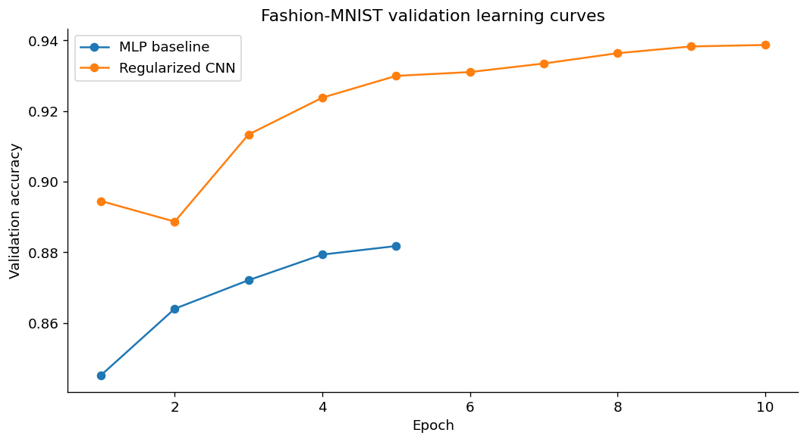
Learning curves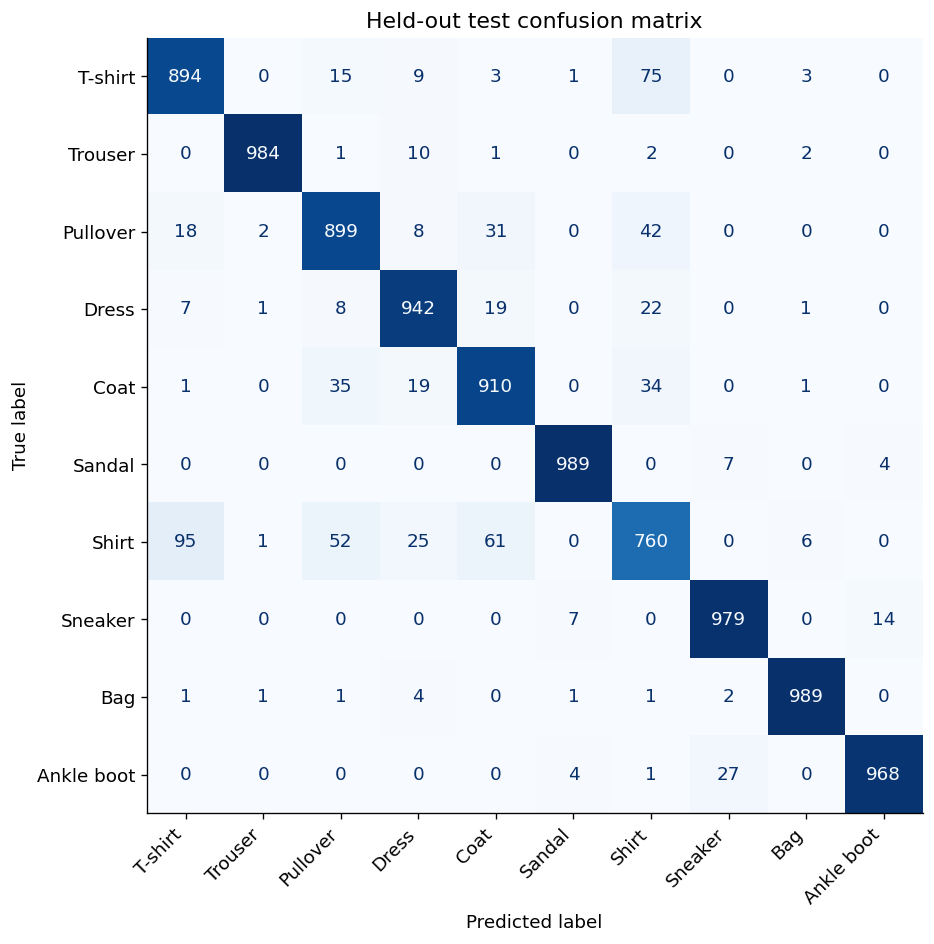
Test confusion matrixRead the project story → · Notebook
PROJECT 10 · Test accuracy 71.55%
Does a pretrained Arabic encoder help this sentiment task?
A pretrained language model does not automatically become a trained sentiment classifier. This project turns the transformer notebook into an explicit supervised experiment and asks how transferable Arabic representations perform on the same task used by the classical baseline.
CAMeLBERT provides frozen text representations; a separate logistic classifier learns the labels. CPU quantization lowers inference cost, and validation selects regularization before the held-out evaluation.
Results, limits and figures
This is a frozen encoder plus trained linear head, not end-to-end transformer fine-tuning. Pretraining-corpus overlap and dataset label provenance are unverified. The classical and transformer results use the same task and partition but different text representations. A more complex model is not automatically a stronger result.
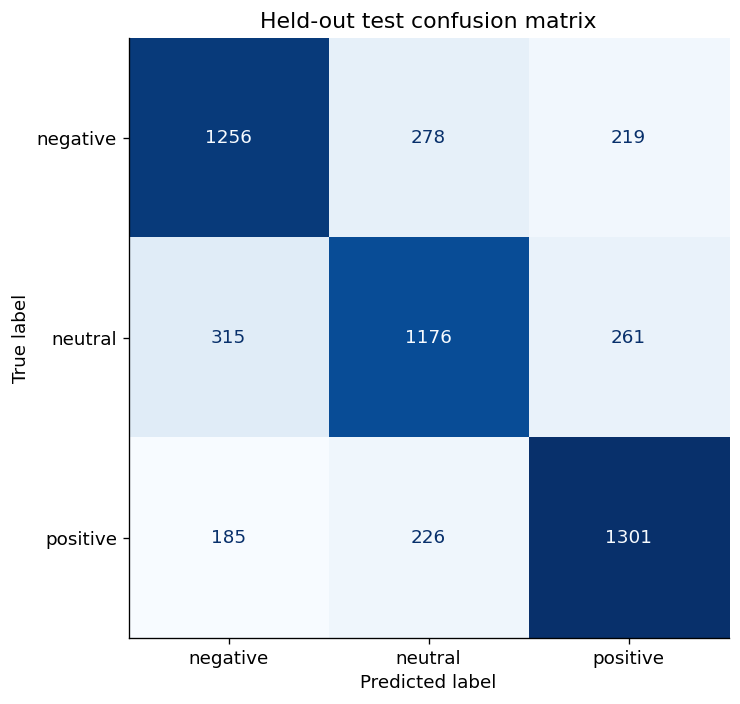
Test confusion matrix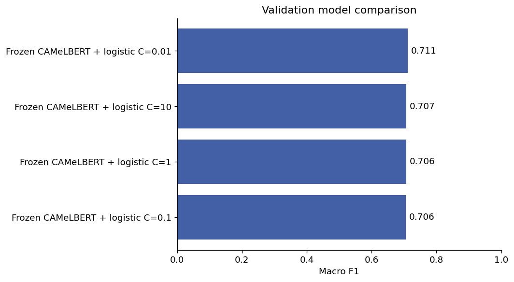
Validation comparisonRead the project story → · Notebook
PROJECT 16 · Test silhouette 0.325
Discovering weather patterns without assuming twelve clusters
Minute-level weather records contain cycles, missing measurements and directional values. The question is whether a small set of repeatable patterns appears in a later time period, rather than merely finding groups in the same records used for fitting.
Wind directions become circular sine/cosine features. The pipeline separates time periods, fits preprocessing on earlier data and compares 2–12 clusters on validation silhouette before checking the final period.
Results, limits and figures
Clustering has no labeled classification accuracy. The selected two-cluster solution has test silhouette 0.325 and cross-seed adjusted Rand agreement of 0.977 and 0.965. These summarize mathematical separation/stability, not meteorological ground truth or performance at other stations. Original notebook is collaborative coursework; preserve original collaborator credits if publishing the coursework.
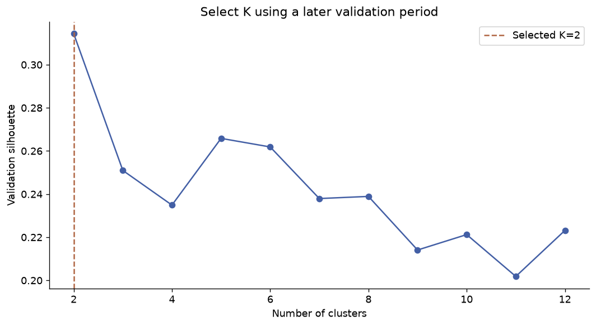
Select k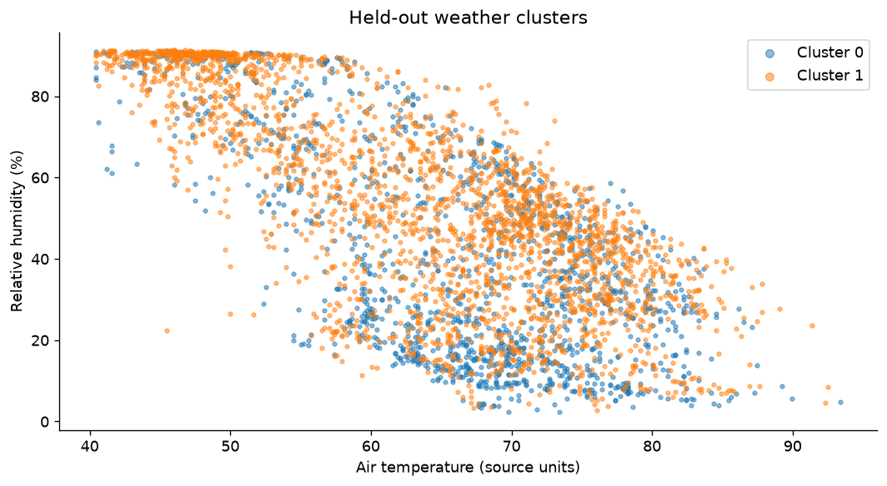
Weather clustersRead the project story → · Notebook
PROJECT 17 · Balanced accuracy 0.742
Why a lower accuracy can still reveal a useful tradeoff
In a credit benchmark with unequal classes, overall accuracy can hide weak detection of the minority class. This project asks how preprocessing and model selection change that tradeoff.
All encoding and scaling move inside cross-validation, then candidates are selected by balanced accuracy. A held-out test set makes the effect on both overall and class-balanced performance visible.
Results, limits and figures
The selected balanced model increased test balanced accuracy from 0.710 to 0.742, while overall accuracy fell from 78.0% to 72.5%. This is a documented tradeoff, not an overall accuracy gain. Historical sensitive attributes are retained for assignment comparability; fairness and deployment suitability were not established. The older 71% result is not a controlled baseline.
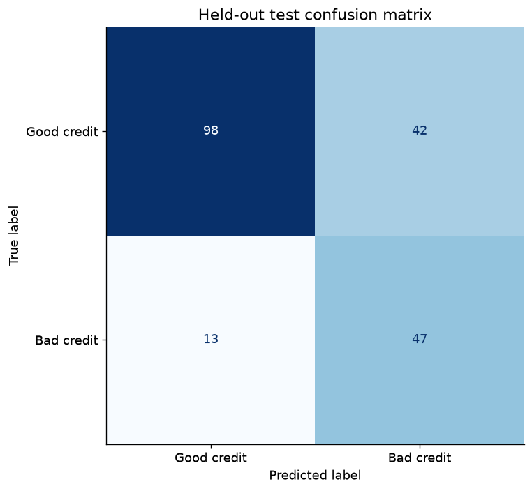
Test confusion matrixRead the project story → · Notebook
PROJECT 18 · Test accuracy 97.37%
Testing whether scale changes the SVM result
SVMs depend on feature geometry, so measurements on different scales can affect what the model learns. This educational benchmark asks how fold-local scaling and model selection change classification performance.
An unscaled linear-SVM baseline is compared with scaled candidates, selected only through training cross-validation. The final 114-case test set is used to report performance and an accuracy interval.
Results, limits and figures
Selected test accuracy is 97.37% (111/114), with a Wilson 95% interval of approximately 92.55%–99.10%. The same-split unscaled baseline reached 92.11%. This is a small educational benchmark and has no clinical validation; it must not be represented as a diagnostic product.
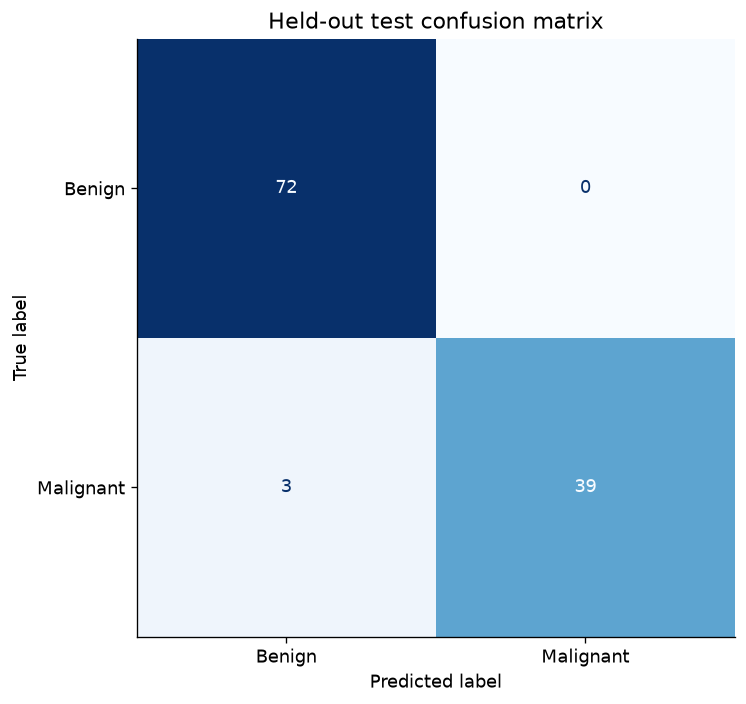
Test confusion matrixRead the project story → · Notebook